Two moths,
one light
Hand a friend the second controller. Your trails can join: a loop made from both moths' light catches everything inside it, its fireflies are worth double, and it leaves a power-up for whoever is quickest.

A team loop, closing
When a moth is caught it becomes a pale spirit. Fly into it and it's back in the air, safe for two seconds.
Play it
Play in your browser, or download the cartridge image for any NES emulator or flash cart.
tonym128.github.io/lantern-moth
- Players1-2, co-op
- Caves15, with 3 bosses
- Creatures6 kinds
- CartridgeNROM-256, 40 KB
- Runs onNES-compatible consoles, emulators
© 2026 Tony Mamacos. Lantern Moth is independent homebrew software and is not affiliated with
or endorsed by Nintendo.
Fly a loop of light

1-2 players8-bit cartridge